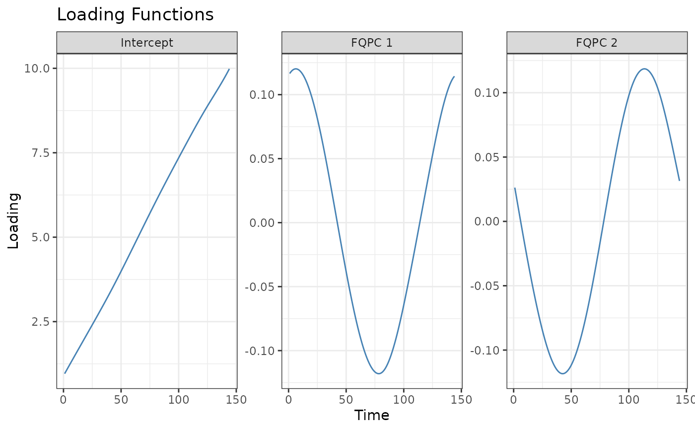

S3 method for class 'fqpca_object'. Given a fqpca object, plot the loading functions using ggplot2 facets.
Usage
# S3 method for class 'fqpca_object'
plot(x, pve = 0.99, ...)Examples
n.obs = 150
n.time = 144
# Generate scores
c1.vals = rnorm(n.obs)
c2.vals = rnorm(n.obs)
# Generate pc's
pc1 = sin(seq(0, 2*pi, length.out = n.time))
pc2 = cos(seq(0, 2*pi, length.out = n.time))
# Generate data
Y <- c1.vals * matrix(pc1, nrow = n.obs, ncol=n.time, byrow = TRUE) +
c2.vals * matrix(pc2, nrow = n.obs, ncol=n.time, byrow = TRUE) +
matrix(seq(1, 10, length.out=n.time), nrow = n.obs, ncol=n.time, byrow = TRUE)
# Add noise
Y <- Y + matrix(rnorm(n.obs * n.time, 0, 0.4), nrow = n.obs)
# Add missing observations
Y[sample(n.obs*n.time, as.integer(0.2*n.obs*n.time))] <- NA
results <- fqpca(data = Y, npc = 2, quantile.value = 0.5, periodic = FALSE, seed=1)
plot(results)
